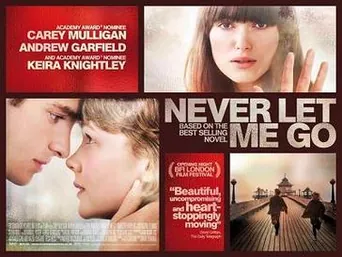

The genetics
Human cloning is the foundation of the society shown, but the film is not interested in how it is done. The clones are created and raised to supply organs, and the medical progress that allows ordinary people to live beyond 100 depends on their early deaths, which the system calls "completing". The real question is whether clones are fully human: the art collected at Hailsham was meant to prove that they have souls, and the guardians argue for better treatment while accepting the donation system itself. There are no scientists on screen; the responsibility lies with an entire society that prefers not to look. Some reviewers missed a fuller explanation of the cloning and the logic of this parallel world, while others have compared the clones' fate to that of farmed animals. Like the novel by Kazuo Ishiguro on which it is based, the film presents genetic identity as irrelevant to personhood; real cloning of mammals from adult cells became possible only with Dolly the sheep in 1996.
The story
In an alternative history, a medical breakthrough in the 1950s has extended life expectancy beyond 100 years. Kathy, Ruth and Tommy grow up at Hailsham, an English boarding school whose pupils are encouraged to stay healthy and make art, the best of which is chosen for "the Gallery" run by the mysterious Madame. A new teacher tells them that they exist to donate their organs and will die young; she is dismissed. As young adults living in the Cottages, they learn that they are clones and hear rumours that couples truly in love can obtain a deferral. Ruth takes Tommy from Kathy, who leaves to become a carer for donors. Years later, Ruth, weakened by donations, reunites the three, admits her betrayal and dies. Kathy and Tommy become a couple and seek a deferral, but Madame and the former headmistress tell them that deferrals never existed: the Gallery was meant to prove that clones have souls. Tommy dies after his fourth donation, and Kathy awaits her own.